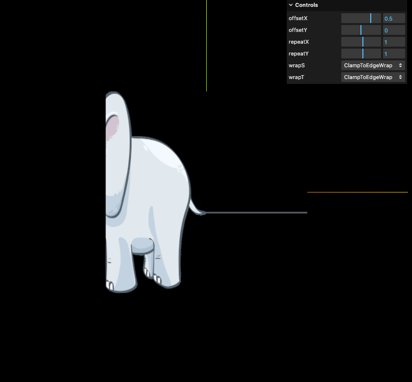
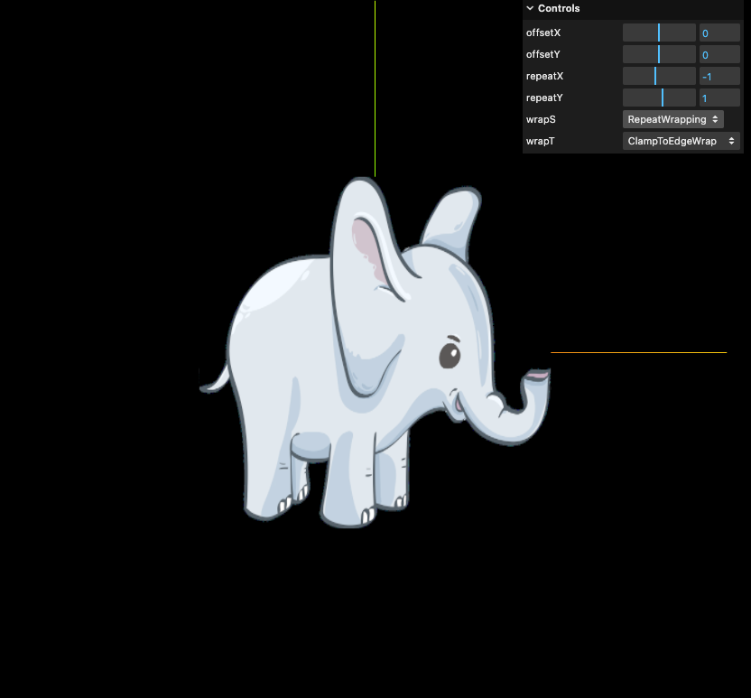

前言
Threejs 中的 texture(貼圖) 可以設置 offset, repeat 及 wrap 屬性，但大部分文章都只有文字說明而沒有視覺化的範例，所以寫了一個視覺化範例讓自己能夠理解
圖片渲染在 (x,y) 平面上，右方橘色線為 x 軸，上方綠色線為 y 軸

範例程式碼
1
2
3
4
5
6
7
8
9
10
11
12
13
14
15
16
17
18
19
20
21
22
23
24
25
26
27
28
29
30
31
32
33
34
35
36
37
38
39
40
41
42
43
44
45
46
47
48
49
50
51
52
53
54
55
56
57
58
59
60
61
62
63
64
65
66
67
68
69
70
71
72
73
| import * as THREE from 'three';
export class Plane {
constructor(experience) {
this.experience = experience;
this.create();
this.createDebugGUI();
}
create() {
this.geometry = new THREE.PlaneGeometry(8, 8);
this.loader = new THREE.TextureLoader();
const texture = this.loader.load(
'https://cdn.pixabay.com/photo/2018/07/09/17/44/baby-elephant-3526681_1280.png'
);
this.material = new THREE.MeshBasicMaterial({ map: texture });
this.mesh = new THREE.Mesh(this.geometry, this.material);
this.experience.scene.add(this.mesh);
}
createDebugGUI() {
this.experience.debug.gui
.add(this.material.map.offset, 'x')
.name('offsetX')
.min(-1)
.max(1)
.step(0.1);
this.experience.debug.gui
.add(this.material.map.offset, 'y')
.name('offsetY')
.min(-1)
.max(1)
.step(0.1);
this.experience.debug.gui
.add(this.material.map.repeat, 'x')
.name('repeatX')
.min(-10)
.max(10)
.step(1);
this.experience.debug.gui
.add(this.material.map.repeat, 'y')
.name('repeatY')
.min(-10)
.max(10)
.step(1);
this.experience.debug.gui
.add(this.material.map, 'wrapS')
.options({
RepeatWrapping: THREE.RepeatWrapping,
ClampToEdgeWrapping: THREE.ClampToEdgeWrapping,
MirroredRepeatWrapping: THREE.MirroredRepeatWrapping
})
.onChange(() => {
this.material.map.needsUpdate = true;
});
this.experience.debug.gui
.add(this.material.map, 'wrapT')
.options({
RepeatWrapping: THREE.RepeatWrapping,
ClampToEdgeWrapping: THREE.ClampToEdgeWrapping,
MirroredRepeatWrapping: THREE.MirroredRepeatWrapping
})
.onChange(() => {
this.material.map.needsUpdate = true;
});
}
}
|
Offset - 偏移
藉由設置 offset 可以改變 uv 座標對應到的紋理圖片，預設的 offset 為 0
1
2
| material.map.offset.x = 0;
material.map.offset.y = 0;
|
offset 為 0，原圖位於正中間
offset.x 為 -0.5，圖片會往右半邊偏移
offset.x 為 0.5，圖片會往左半邊偏移

這裡我一直有個疑問，為什麼 offset.x 設為 -0.5 的時候圖片是往右半邊偏移而不是往左半邊偏移呢？後來才想出一個合理的解釋，uv 座標的原點在左下角，而 offset.x = -0.5 的意思是整個 uv 座標系.x - 0.5 = 紋理圖片的位置.x，所以以右上角 uv 座標系的 (1, 1) 來看，x 減掉 0.5 後變成 (0.5, 1) 而這個 (0.5, 1) 對應到的是紋理圖片的位置，所以 offset.x 設為 -0.5 看到的結果就是圖片往右偏移了一半

圖片來源 1
圖片來源 2
Repeat
控制圖片在 uv 方向會 repeat 多少次，預設值為 1
1
2
| material.map.repeat.x = 1;
material.map.repeat.y = 1;
|
repeat 為 1，原圖不會重複
repeat.x 跟 repeat.y 都設為 2，所以圖片總共重複 4 次
(另外這裡還設定了 wrap 的方式為 THREE.RepeatWrapping，所以才有辦法重複)
repeat.x 為 -1，設成負數的話圖片會左右顛倒
(另外這裡還設定了 wrapS 的方式為 THREE.RepeatWrapping)

Wrap
wrap 處理圖片未填滿時，如何渲染剩餘空間的方式，對應到 x, y 軸設定的屬性名稱分別是 wrapS 及 wrapT
1
2
| material.map.wrapS = THREE.ClampToEdgeWrapping;
material.map.wrapT = THREE.ClampToEdgeWrapping;
|
threejs 中總共有三個值可以做設定：
- THREE.RepeatWrapping: 重複渲染圖片
- THREE.ClampToEdgeWrapping: 最後一個像素點會延伸到邊界 (預設值)
- THREE.MirroredRepeatWrapping: 跟 RepeatWrapping 很像，差別是會鏡像的重複渲染
這三個值乍看之下很抽象，以下我們來看不同範例的演示，會比較清楚
THREE.RepeatWrapping
repeat.x 跟 repeat.y 都設為 2，所以圖片總共重複 4 次
THREE.ClampToEdgeWrapping
repeat.x 跟 repeat.y 都設為 2，但因為 wrapS 及 wrapT 都設為 THREE.ClampToEdgeWrapping，未填滿的地方會參考最後一個像素點做延伸，而這張大象左邊的耳朵及尾巴分別是最遠的像素點，所以會從這兩點延伸到邊界
THREE.MirroredRepeatWrapping
repeat.x 跟 repeat.y 都設為 2，所以圖片總共重複 4 次，但因為是鏡像渲染，所以上下左右的圖片分別是對稱的
版本
參考資料
ThreeJs入门18-纹理的重复和纹理的回环
three.js UV映射简述